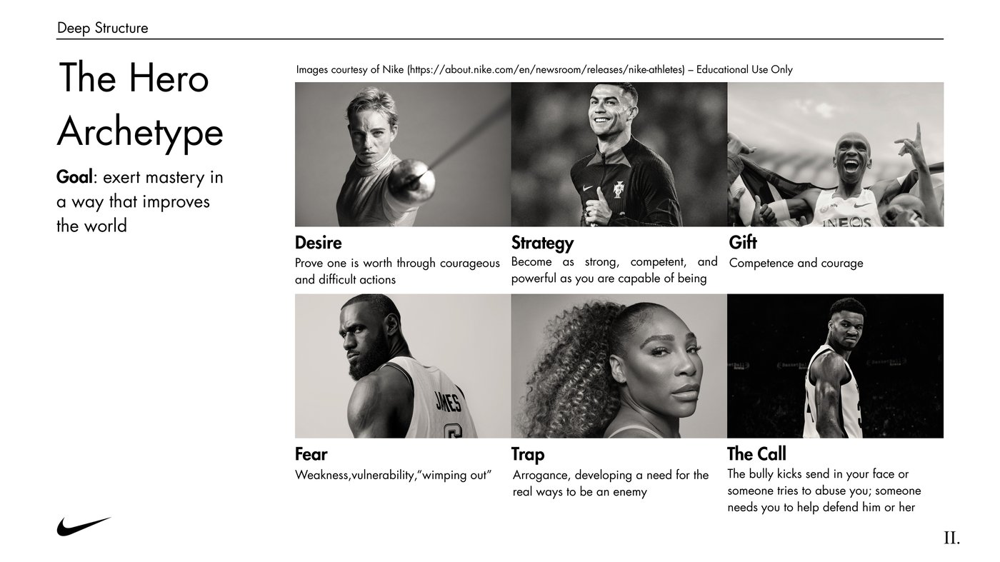
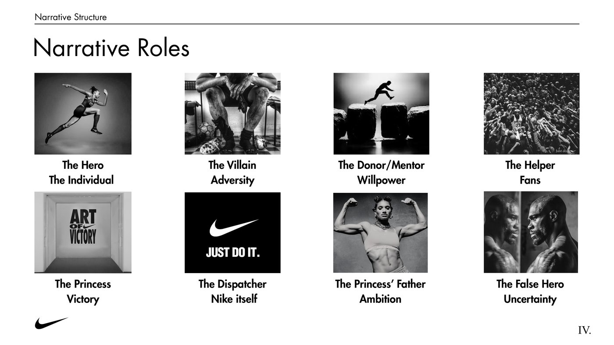
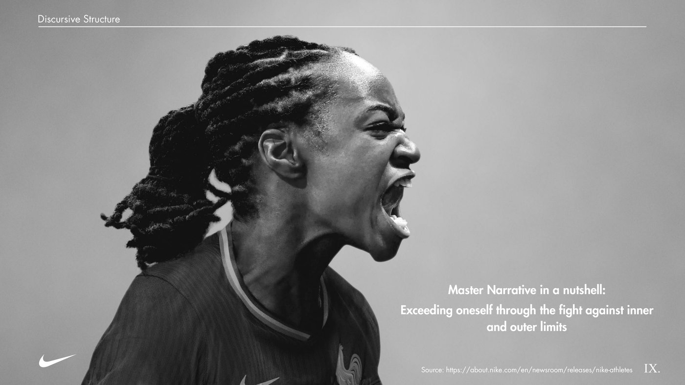
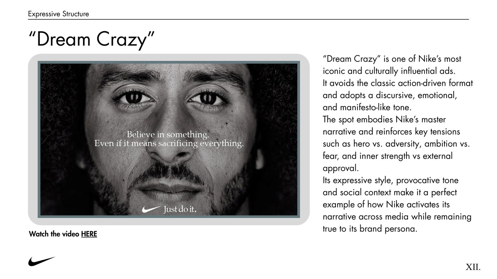

Analisi della comunicazione narrativa di Nike attraverso il modello DNDE, framework di storytelling strategico applicato per il corso di Communication & Storytelling.
Swoosh logo courtesy of Nike
Contesto
Nike non è solo un brand sportivo: è un narratore di ambizione e perseveranza. La sua comunicazione celebra in modo coerente il coraggio di superare i propri limiti e di credere nel proprio potenziale. L'obiettivo del progetto è stato esplorare come Nike costruisca un sistema narrativo coerente — dai valori profondi all'espressione visiva — che definisce la sua identità di brand "Eroe", trasformando ogni messaggio in parte di una storia continua di empowerment.
Nota personale: Nike è la mia dream company. Studiarne a fondo la struttura narrativa è stato anche un modo per capire più da vicino come comunica un brand che vorrei, un giorno, contribuire a far crescere.
Framework
Il DNDE è un framework di analisi dello storytelling di brand sviluppato per il corso di Communication & Storytelling. Scompone la narrazione di un brand in quattro livelli concentrici, dal più profondo (i valori) al più superficiale (il contenuto visibile al pubblico):
Applicazione · D
L'archetipo che rappresenta i valori fondanti di Nike — l'empowerment delle persone attraverso disciplina e resilienza — è quello dell'Eroe. Il suo obiettivo è esercitare la propria maestria in un modo che migliori il mondo; il suo desiderio è dimostrare il proprio valore attraverso azioni coraggiose e difficili.
Alcune campagne promozionali, come Nike Aero-FIT e Project Amplify, rivelano anche tratti dell'archetipo del Mago: temi di trasformazione, tecnologia e padronanza dell'ambiente fisico. Questi non sostituiscono l'identità dell'Eroe, ma la completano, rafforzando il posizionamento di Nike come brand che non solo spinge le persone oltre i propri limiti, ma li reinventa attraverso un'innovazione visionaria.

Applicazione · N
Applicando la grammatica narrativa di Propp, ogni figura della comunicazione Nike assume un ruolo riconoscibile nella struttura della storia:
Il plot di riferimento individuato è "Overcoming the Monster": l'eroe Nike non è sempre un atleta affermato, ma chiunque sia determinato a vincere superando le sfide lungo il percorso — incluse le proprie incertezze.

Applicazione · D
A livello discorsivo, Nike costruisce un universo narrativo coerente attorno al superamento dei limiti, interni ed esterni. L'eroe Nike è chiunque sia mosso dall'ambizione di raggiungere eccellenza, successo e vittoria, sostenuto dai propri fan e dalla propria forza di volontà.
La persona di marca che emerge è quella dell'istigatore implacabile: il coach, l'ego che si rifiuta di accettare limiti e richiede trasformazione. Il tono non rassicura, provoca — un messaggio diretto e ritmico che si rivolge sia all'atleta d'élite sia alla persona comune: "You can do more. Now go."

Applicazione · E
A livello espressivo, l'identità narrativa di Nike si traduce in elementi concreti e riconoscibili. Lo Swoosh, disegnato nel 1971 da Carolyn Davidson, è evoluto da semplice segno grafico a simbolo di attivazione, movimento e ambizione — il "trigger" visivo per eccellenza del brand.
Sui diversi canali — sito e magazine digitale, social media, cartellonistica — Nike adatta il formato mantenendo lo stesso universo di sfida e movimento. Il caso studio più rappresentativo è la campagna "Dream Crazy": evita il formato action-driven classico per adottare un tono discorsivo, emotivo, quasi manifesto. Rinforza le tensioni chiave del Master Narrative — eroe contro avversità, ambizione contro paura, forza interiore contro approvazione esterna — restando coerente con la persona di marca anche in un contesto culturalmente delicato.

Limiti e considerazioni
Applicare il modello DNDE a un caso reale come Nike ha richiesto di tenere insieme quattro livelli di analisi senza perdere la coerenza tra loro: un'incoerenza tra Deep Structure e scelte espressive avrebbe reso l'intera analisi meno solida. Il valore di questo framework, più che in una singola campagna, sta nel mostrare come un brand possa rimanere riconoscibile pur adattando tono e formato a contesti molto diversi — dalla pubblicità tradizionale a un manifesto culturale come "Dream Crazy".
Prossimi passi
Altre analisi tra ricerca di mercato, competitive analysis e marketing strategy.